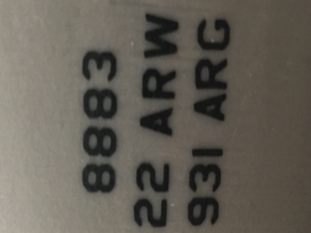

<!DOCTYPE html>
<html lang="en">
    <head>
        <title>Augmented Reality Investment Project</title>
        <meta charset="utf-8">
        <meta http-equiv="X-UA-Compatible" content="IE=edge,chrome=1">
        <meta name="apple-touch-fullscreen" content="yes" />
        <meta name="apple-mobile-web-app-capable" content="yes" />
        <meta name="apple-mobile-web-app-status-bar-style" content="black" />

        <link rel="stylesheet" href="https://fonts.googleapis.com/css?family=Droid+Sans:regular,bold|Inconsolata|PT+Sans:400,700">
        <link rel="stylesheet" href="css/bootstrap.css">
        <link rel="stylesheet" href="css/jsfeat.css">
    </head>
    <body>
        <div id="foundMsg"></div>
        <video id="webcam"></video>
        <div id="container">
            
            <canvas id="canvas"></canvas>
            
            
            
            <input type="button" class="disabled" id="uibutton" value="Undetected" disabled/>
            <input type="button" class="enabled" id="captureTailEnable" value="Capture Tail" enabled/>
            <input type="button" class="enabled" id="captureTailButton" value="Capture" style="display: none;" enabled/>
            <textarea id="tailCaptureArea" rows="1" cols="1" class="rectangle"></textarea>
        </div>

        <!-- IMPORT IMAGE PATTERN HERE -->
        
        
        <!---->
        <!---->
        <!---->
        
        <script type="text/javascript" src="https://ajax.googleapis.com/ajax/libs/jquery/1.8.2/jquery.min.js"></script>
        <script type="text/javascript" src="build/jsfeat-min.js"></script>
        <script type="text/javascript" src="js/compatibility.js"></script>
        <script type="text/javascript" src="js/profiler.js"></script>
        <script type="text/javascript" src="js/dat.gui.min.js"></script>
        <script src='https://cdn.rawgit.com/naptha/tesseract.js/1.0.10/dist/tesseract.js'></script>
        <script>
        $(window).load(function() {
            Tesseract.recognize(pattern)
                .then(function(result){
                    console.log(result)
            });
            "use strict";
            // loading webcam stream
            var video = document.getElementById('webcam');
            var canvas = document.getElementById('canvas');
            var container = document.getElementById('container');
            $( window ).resize(function() { // resize canvas on window size change
                var vpw = $(window).width();
                var vph = $(window).height();
                container.style.width = vpw + "px";
                container.style.height = vph + "px";
                canvas.width = vpw;
                canvas.height = vph;
                video.width = vpw;
                video.height = vph;
            });
            // initialize canvas size for camera stream
            var vpw = $(window).width();
            var vph = $(window).height();
            container.style.width = vpw + "px";
            container.style.height = vph + "px";
            canvas.width = vpw;
            canvas.height = vph;            
            video.width = vpw;
            video.height = vph;
            video.setAttribute('autoplay', '');
            video.setAttribute('muted', '');
            video.setAttribute('playsinline', '');
            // set parameters for stream (mobile browser compatible)
            var facingMode = "environment"; 
            var detected = false;
            var bound = false;
            var constraints = {
                audio: false,
                video: {
                    facingMode: facingMode
                }
            }
            try {
                var attempts = 0;
                var readyListener = function(event) {
                    findVideoSize();
                };
                var findVideoSize = function() {
                    if(video.videoWidth > 0 && video.videoHeight > 0) {
                        video.removeEventListener('loadeddata', readyListener);
                        onDimensionsReady(video.videoWidth, video.videoHeight);
                    } else {
                        if(attempts < 10) {
                            attempts++;
                            setTimeout(findVideoSize, 200);
                        } else {
                            onDimensionsReady(640, 480);
                        }
                    }
                };
                var onDimensionsReady = function(width, height) {
                    demo_app(width, height);
                    compatibility.requestAnimationFrame(tick);
                };
                video.addEventListener('loadeddata', readyListener);
                compatibility.getUserMedia(constraints, function(stream) { // mobile compatibility
                try {
                    video.src = compatibility.URL.createObjectURL(stream);
                } catch (error) {
                    video.srcObject = stream;
                }
                setTimeout(function() {
                    video.play();
                    }, 500);
                }, function (error) {
                    $('#canvas').hide();
                    $('#log').hide();
                    $('#no_rtc').html('<h4>WebRTC not available.</h4>');
                    $('#no_rtc').show();
                });
            } catch (error) {
                $('#canvas').hide();
                $('#log').hide();
                $('#no_rtc').html('<h4>Something goes wrong...</h4>');
                $('#no_rtc').show();
            }
            var stat = new profiler();
            // our point match structure
            var match_t = (function () {
                function match_t(screen_idx, pattern_lev, pattern_idx, distance) {
                    if (typeof screen_idx === "undefined") { screen_idx=0; }
                    if (typeof pattern_lev === "undefined") { pattern_lev=0; }
                    if (typeof pattern_idx === "undefined") { pattern_idx=0; }
                    if (typeof distance === "undefined") { distance=0; }
                    this.screen_idx = screen_idx;
                    this.pattern_lev = pattern_lev;
                    this.pattern_idx = pattern_idx;
                    this.distance = distance;
                }
                return match_t;
            })();
            var gui,options,ctx,canvasWidth,canvasHeight;
            var img_u8, img_u8_smooth, screen_corners, num_corners, screen_descriptors;
            var pattern_corners, pattern_descriptors, pattern_preview;
            var matches, homo3x3, match_mask;
            var num_train_levels = 4;
            var demo_opt = function(){
                this.blur_size = 5;
                this.lap_thres = 30;
                this.eigen_thres = 25;
                this.match_threshold = 48;
                this.train_pattern = function() {
                    var lev=0, i=0;
                    var sc = 1.0;
                    var max_pattern_size = 512;
                    var max_per_level = 300;
                    var sc_inc = Math.sqrt(2.0);
                    var img = document.getElementById("pattern"); // process image pattern to detect
                    ctx.drawImage(document.getElementById("pattern"), 0, 0);
                    var imageData = ctx.getImageData(0, 0, img.width, img.height);
                    var col = img.naturalWidth;
                    var row = img.naturalHeight;
                    var lev0_img = new jsfeat.matrix_t(col, row, jsfeat.U8_t | jsfeat.C1_t);
                    var lev_img = new jsfeat.matrix_t(col, row, jsfeat.U8_t | jsfeat.C1_t);
                    var new_width=0, new_height=0;
                    var lev_corners, lev_descr;
                    var corners_num=0;
                    var sc0 = Math.min(max_pattern_size/col, max_pattern_size/row);
                    new_width = (col*sc0)|0;
                    new_height = (row*sc0)|0;
                    
                    stat.start("grayscale");
                    jsfeat.imgproc.grayscale(imageData.data, col, row, img_u8); // Defines values for img_u8
                    stat.stop("grayscale");
                    jsfeat.imgproc.resample(img_u8, lev0_img, new_width, new_height);  // modify lev0_img data array field
                    // prepare preview
                    pattern_preview = new jsfeat.matrix_t(new_width>>1, new_height>>1, jsfeat.U8_t | jsfeat.C1_t);
                    jsfeat.imgproc.pyrdown(lev0_img, pattern_preview);
                    for(lev=0; lev < num_train_levels; ++lev) {
                        pattern_corners[lev] = [];
                        lev_corners = pattern_corners[lev];
                        // preallocate corners array
                        i = (new_width*new_height) >> lev;
                        while(--i >= 0) {
                            lev_corners[i] = new jsfeat.keypoint_t(0,0,0,0,-1);
                        }
                        pattern_descriptors[lev] = new jsfeat.matrix_t(32, max_per_level, jsfeat.U8_t | jsfeat.C1_t);
                    }
                    // do the first level
                    lev_corners = pattern_corners[0];
                    lev_descr = pattern_descriptors[0];
                    jsfeat.imgproc.gaussian_blur(lev0_img, lev_img, options.blur_size|0); // this is more robust
                    corners_num = detect_keypoints(lev_img, lev_corners, max_per_level);
                    jsfeat.orb.describe(lev_img, lev_corners, corners_num, lev_descr);
                    console.log("train " + lev_img.cols + "x" + lev_img.rows + " points: " + corners_num);
                    sc /= sc_inc;
                    // lets do multiple scale levels
                    // we can use Canvas context draw method for faster resize
                    // but its nice to demonstrate that you can do everything with jsfeat
                    for(lev = 1; lev < num_train_levels; ++lev) {
                        lev_corners = pattern_corners[lev];
                        lev_descr = pattern_descriptors[lev];
                        new_width = (lev0_img.cols*sc)|0;
                        new_height = (lev0_img.rows*sc)|0;
                        jsfeat.imgproc.resample(lev0_img, lev_img, new_width, new_height);
                        jsfeat.imgproc.gaussian_blur(lev_img, lev_img, options.blur_size|0);
                        corners_num = detect_keypoints(lev_img, lev_corners, max_per_level);
                        jsfeat.orb.describe(lev_img, lev_corners, corners_num, lev_descr);
                        // fix the coordinates due to scale level
                        for(i = 0; i < corners_num; ++i) {
                            lev_corners[i].x *= 1./sc;
                            lev_corners[i].y *= 1./sc;
                        }
                        console.log("train " + lev_img.cols + "x" + lev_img.rows + " points: " + corners_num);
                        sc /= sc_inc;
                    }
                };
            }
            function demo_app(videoWidth, videoHeight) {
                canvasWidth  = canvas.width;
                canvasHeight = canvas.height;
                ctx = canvas.getContext('2d');
                ctx.fillStyle = "rgb(0,255,0)";
                ctx.strokeStyle = "rgb(0,255,0)";
                
                var vpw = $(window).width();
                var vph = $(window).height();
                img_u8 = new jsfeat.matrix_t(vpw, vph, jsfeat.U8_t | jsfeat.C1_t);
                // after blur
                img_u8_smooth = new jsfeat.matrix_t(vpw, vph, jsfeat.U8_t | jsfeat.C1_t);
                // we wll limit to 500 strongest points
                screen_descriptors = new jsfeat.matrix_t(32, 500, jsfeat.U8_t | jsfeat.C1_t);
                pattern_descriptors = [];
                screen_corners = [];
                pattern_corners = [];
                matches = [];
                var i = vpw*vph;
                while(--i >= 0) {
                    screen_corners[i] = new jsfeat.keypoint_t(0,0,0,0,-1);
                    matches[i] = new match_t();
                }
                // transform matrix
                homo3x3 = new jsfeat.matrix_t(3,3,jsfeat.F32C1_t);
                match_mask = new jsfeat.matrix_t(500,1,jsfeat.U8C1_t);
                options = new demo_opt();
                gui = new dat.GUI();
                gui.add(options, "blur_size", 3, 9).step(1);
                gui.add(options, "lap_thres", 1, 100);
                gui.add(options, "eigen_thres", 1, 100);
                gui.add(options, "match_threshold", 16, 128);
                gui.add(options, "train_pattern");
                
                stat.add("grayscale");
                stat.add("gauss blur");
                stat.add("keypoints");
                stat.add("orb descriptors");
                stat.add("matching");
            }
            function manualTick(){
                compatibility.requestAnimationFrame(tick);
                stat.new_frame();
                if (video.readyState === video.HAVE_ENOUGH_DATA) {
                    // Load in single frame from webcam stream
                    var vpw = $(window).width();
                    var vph = $(window).height();
                    var col = vpw;
                    var row = vph;
                    //, 0, 0, col, row);
                    //ctx.drawImage(video, 0, 0, col/2, row/2, 0, 0, 1.25*col, row);
                    ctx.drawImage(video, 0, 0, col, row);
                    var imageData = ctx.getImageData(0, 0, col, row);
                    var img_u8 = new jsfeat.matrix_t(col, row, jsfeat.U8C1_t);
                    jsfeat.imgproc.grayscale(imageData.data, col, row, img_u8);
                    //jsfeat.imgproc.equalize_histogram(img_u8, img_u8);
                    //jsfeat.imgproc.gaussian_blur(img_u8, img_u8, 3);
                    //jsfeat.imgproc.resample(img_u8, lev0_img, new_width, new_height);  // modify lev0_img data array fie
                    var data_u32 = new Uint32Array(imageData.data.buffer);
                    var i = img_u8.cols*img_u8.rows, pix = 0;
                    var alpha = (0xff << 24);
                    while(--i >= 0) {
                        pix = img_u8.data[i];
                        data_u32[i] = alpha | (pix << 16) | (pix << 8) | pix;
                    }
                    imageData = contrastImage(imageData, 50, 225);
                    ctx.putImageData(imageData,0,0);
                    const snapshot = canvas.toDataURL("image/png");
                    document.querySelector('#airforcelogo').setAttribute('src', snapshot);
                    Tesseract.recognize(snapshot)
                    .then(function(result){
                    console.log(result)
                        alert(result.text);
                    });
                }
            }
            function contrastImage(imageData, contrast, brightness) {  // contrast as an integer percent  
                var data = imageData.data;  // original array modified, but canvas not updated
                contrast *= 2.55; // or *= 255 / 100; scale integer percent to full range
                var factor = (255 + contrast) / (255.01 - contrast);  //add .1 to avoid /0 error

                for(var i=0;i<data.length;i+=4)  //pixel values in 4-byte blocks (r,g,b,a)
                {
                    data[i] = factor * (data[i] - 128) + 128 + brightness;     //r value
                    data[i+1] = factor * (data[i+1] - 128) + 128 + brightness; //g value
                    data[i+2] = factor * (data[i+2] - 128) + 128 + brightness; //b value

                }
                return imageData;  //optional (e.g. for filter function chaining)
            }
            function tick() {
                compatibility.requestAnimationFrame(tick);
                stat.new_frame();
                if (video.readyState === video.HAVE_ENOUGH_DATA) {
                    // Load in single frame from webcam stream
                    var vpw = $(window).width();
                    var vph = $(window).height();
                    ctx.drawImage(video, 0, 0, vpw, vph);
                    var imageData = ctx.getImageData(0, 0, vpw, vph);  
                    stat.start("grayscale");
                    jsfeat.imgproc.grayscale(imageData.data, vpw, vph, img_u8); // Defines values for img_u8
                    stat.stop("grayscale");
                    stat.start("gauss blur");
                    jsfeat.imgproc.gaussian_blur(img_u8, img_u8_smooth, options.blur_size|0);
                    stat.stop("gauss blur");
                    jsfeat.yape06.laplacian_threshold = options.lap_thres|0;
                    jsfeat.yape06.min_eigen_value_threshold = options.eigen_thres|0;
                    stat.start("keypoints");
                    num_corners = detect_keypoints(img_u8_smooth, screen_corners, 500);
                    stat.stop("keypoints");
                    stat.start("orb descriptors");
                    jsfeat.orb.describe(img_u8_smooth, screen_corners, num_corners, screen_descriptors);
                    stat.stop("orb descriptors");
                    // render result back to canvas
                    var data_u32 = new Uint32Array(imageData.data.buffer);
                    //render_corners(screen_corners, num_corners, data_u32, 640);
                    // render pattern and matches
                    var num_matches = 0;
                    var good_matches = 0;
                    if(pattern_preview) {
                        //render_mono_image(pattern_preview.data, data_u32, pattern_preview.cols, pattern_preview.rows, 640);
                        stat.start("matching");
                        num_matches = match_pattern();
                        good_matches = find_transform(matches, num_matches);
                        stat.stop("matching");
                    }
                    ctx.putImageData(imageData, 0, 0);
                    if(num_matches) {
                        //render_matches(ctx, matches, num_matches);
                        if(good_matches > 8){
                            render_pattern_shape(ctx);         
                        }else{
                            document.getElementById("foundMsg").innerHTML = "";
                        }
                    }
                    $('#log').html(stat.log());
                }
            }
            // UTILITIES
            function detect_keypoints(img, corners, max_allowed) {
                // detect features
                var count = jsfeat.yape06.detect(img, corners, 17);
                // sort by score and reduce the count if needed
                if(count > max_allowed) {
                    jsfeat.math.qsort(corners, 0, count-1, function(a,b){return (b.score<a.score);});
                    count = max_allowed;
                }
                // calculate dominant orientation for each keypoint
                for(var i = 0; i < count; ++i) {
                    corners[i].angle = ic_angle(img, corners[i].x, corners[i].y);
                }
                return count;
            }
            // central difference using image moments to find dominant orientation
            var u_max = new Int32Array([15,15,15,15,14,14,14,13,13,12,11,10,9,8,6,3,0]);
            function ic_angle(img, px, py) {
                var half_k = 15; // half patch size
                var m_01 = 0, m_10 = 0;
                var src=img.data, step=img.cols;
                var u=0, v=0, center_off=(py*step + px)|0;
                var v_sum=0,d=0,val_plus=0,val_minus=0;
                // Treat the center line differently, v=0
                for (u = -half_k; u <= half_k; ++u)
                    m_10 += u * src[center_off+u];
                // Go line by line in the circular patch
                for (v = 1; v <= half_k; ++v) {
                    // Proceed over the two lines
                    v_sum = 0;
                    d = u_max[v];
                    for (u = -d; u <= d; ++u) {
                        val_plus = src[center_off+u+v*step];
                        val_minus = src[center_off+u-v*step];
                        v_sum += (val_plus - val_minus);
                        m_10 += u * (val_plus + val_minus);
                    }
                    m_01 += v * v_sum;
                }
                return Math.atan2(m_01, m_10);
            }
            function find_transform(matches, count) { // estimate homography transform between matched points
                // motion kernel
                var mm_kernel = new jsfeat.motion_model.homography2d();
                // ransac params
                var num_model_points = 4;
                var reproj_threshold = 3;
                var ransac_param = new jsfeat.ransac_params_t(num_model_points,
                                                              reproj_threshold, 0.5, 0.99);
                var pattern_xy = [];
                var screen_xy = [];
                // construct correspondences
                for(var i = 0; i < count; ++i) {
                    var m = matches[i];
                    var s_kp = screen_corners[m.screen_idx];
                    var p_kp = pattern_corners[m.pattern_lev][m.pattern_idx];
                    pattern_xy[i] = {"x":p_kp.x, "y":p_kp.y};
                    screen_xy[i] =  {"x":s_kp.x, "y":s_kp.y};
                }
                // estimate motion
                var ok = false;
                ok = jsfeat.motion_estimator.ransac(ransac_param, mm_kernel,
                                                    pattern_xy, screen_xy, count, homo3x3, match_mask, 1000);
                // extract good matches and re-estimate
                var good_cnt = 0;
                if(ok) {
                    for(var i=0; i < count; ++i) {
                        if(match_mask.data[i]) {
                            pattern_xy[good_cnt].x = pattern_xy[i].x;
                            pattern_xy[good_cnt].y = pattern_xy[i].y;
                            screen_xy[good_cnt].x = screen_xy[i].x;
                            screen_xy[good_cnt].y = screen_xy[i].y;
                            good_cnt++;
                        }
                    }
                    // run kernel directly with inliers only
                    mm_kernel.run(pattern_xy, screen_xy, homo3x3, good_cnt);
                } else {
                    jsfeat.matmath.identity_3x3(homo3x3, 1.0);
                }
                return good_cnt;
            }
            function popcnt32(n) { // non zero bits count
                n -= ((n >> 1) & 0x55555555);
                n = (n & 0x33333333) + ((n >> 2) & 0x33333333);
                return (((n + (n >> 4))& 0xF0F0F0F)* 0x1010101) >> 24;
            }
            function match_pattern() { // naive brute-force matching each on screen point is compared to all pattern points to find the closest match
                var q_cnt = screen_descriptors.rows;
                var query_du8 = screen_descriptors.data;
                var query_u32 = screen_descriptors.buffer.i32; // cast to integer buffer
                var qd_off = 0;
                var qidx=0,lev=0,pidx=0,k=0;
                var num_matches = 0;
                for(qidx = 0; qidx < q_cnt; ++qidx) {
                    var best_dist = 256;
                    var best_dist2 = 256;
                    var best_idx = -1;
                    var best_lev = -1;
                    for(lev = 0; lev < num_train_levels; ++lev) {
                        var lev_descr = pattern_descriptors[lev];
                        var ld_cnt = lev_descr.rows;
                        var ld_i32 = lev_descr.buffer.i32; // cast to integer buffer
                        var ld_off = 0;
                        for(pidx = 0; pidx < ld_cnt; ++pidx) {
                            var curr_d = 0;
                            // our descriptor is 32 bytes so we have 8 Integers
                            for(k=0; k < 8; ++k) {
                                curr_d += popcnt32( query_u32[qd_off+k]^ld_i32[ld_off+k] );
                            }
                            if(curr_d < best_dist) {
                                best_dist2 = best_dist;
                                best_dist = curr_d;
                                best_lev = lev;
                                best_idx = pidx;
                            } else if(curr_d < best_dist2) {
                                best_dist2 = curr_d;
                            }
                            ld_off += 8; // next descriptor
                        }
                    }
                    // filter out by some threshold
                    if(best_dist < options.match_threshold) {
                        matches[num_matches].screen_idx = qidx;
                        matches[num_matches].pattern_lev = best_lev;
                        matches[num_matches].pattern_idx = best_idx;
                        num_matches++;
                    }
                    //
                    /* filter using the ratio between 2 closest matches
                    if(best_dist < 0.8*best_dist2) {
                        matches[num_matches].screen_idx = qidx;
                        matches[num_matches].pattern_lev = best_lev;
                        matches[num_matches].pattern_idx = best_idx;
                        num_matches++;
                    }
                    */
                    qd_off += 8; // next query descriptor
                }
                return num_matches;
            }
            function tCorners(M, w, h) {  // project/transform rectangle corners with 3x3 Matrix
                var pt = [ {'x':0,'y':0}, {'x':w,'y':0}, {'x':w,'y':h}, {'x':0,'y':h} ];
                var z=0.0, i=0, px=0.0, py=0.0;
                for (; i < 4; ++i) {
                    px = M[0]*pt[i].x + M[1]*pt[i].y + M[2];
                    py = M[3]*pt[i].x + M[4]*pt[i].y + M[5];
                    z = M[6]*pt[i].x + M[7]*pt[i].y + M[8];
                    pt[i].x = px/z;
                    pt[i].y = py/z;
                }
                return pt;
            }
            function render_matches(ctx, matches, count) {  // rendering the lines connecting the corners between webcam stream and image pattern
                for(var i = 0; i < count; ++i) {
                    var m = matches[i];
                    var s_kp = screen_corners[m.screen_idx];
                    var p_kp = pattern_corners[m.pattern_lev][m.pattern_idx];
                    if(match_mask.data[i]) {
                        ctx.strokeStyle = "rgb(0,255,0)";
                    } else {
                        ctx.strokeStyle = "rgb(255,0,0)";
                    }
                    ctx.beginPath();
                    ctx.moveTo(s_kp.x,s_kp.y);
                    ctx.lineTo(p_kp.x*0.5, p_kp.y*0.5); // our preview is downscaled
                    ctx.lineWidth=1;
                    ctx.stroke();
                }
            }
            function fade(element) {
                var op = 1;  // initial opacity
                var timer = setInterval(function () {
                    if (op <= 0.1){
                        clearInterval(timer);
                        element.style.display = 'none';
                    }
                    element.style.opacity = op;
                    element.style.filter = 'alpha(opacity=' + op * 100 + ")";
                    op -= op * 0.1;
                }, 50);
            }
            function fadeQuick(element){
                element.style.opacity = "0.1";
                element.style.display = "none";
            }
            function unfade(element) {
                var op = 0.1;  // initial opacity
                element.style.display = 'block';
                var timer = setInterval(function () {
                    if (op >= 1){
                        clearInterval(timer);
                    }
                    element.style.opacity = op;
                    element.style.filter = 'alpha(opacity=' + op * 100 + ")";
                    op += op * 0.25;
                }, 10);
            }
            document.getElementById("uibutton").addEventListener("click", function(){  // unbind graphic data for detected image pattern
                var uiButt = document.getElementById("uibutton");
                fadeQuick(document.getElementById("graphic1"));  // hide graphics
                fadeQuick(document.getElementById("graphic2"));
                fadeQuick(document.getElementById("graphic3"));
                uiButt.disabled = true;  // disable button 
                uiButt.classList.remove("enabled");
                uiButt.classList.add("disabled");
                uiButt.style.backgroundColor = "rgba(211,211,211,0.3)";
                uiButt.value = "Undetected";
                detected=false;                     
            });
            document.getElementById("captureTailEnable").addEventListener("click", function(){  // unbind graphic data for detected image pattern
                //$('#captureTailEnable').hide();
                //$('#captureTailButton').show();
                //$('#tailCaptureArea').show();
                manualTick();
            });
            document.getElementById("captureTailButton").addEventListener("click", function(){  // unbind graphic data for detected image pattern
                manualTick();
                $('#captureTailEnable').show();
                $('#captureTailButton').hide();
                $('#tailCaptureArea').hide();   
            });
            function render_pattern_shape(ctx) {  // render a shape or create UI when object is detected (good matches > 8)
                // get the projected pattern corners
                document.getElementById("foundMsg").innerHTML = "OBJECT FOUND";
                if(detected == false){
                    detected = true;
                    var uiButt = document.getElementById("uibutton");
                    unfade(document.getElementById("graphic1"));  // show graphics
                    unfade(document.getElementById("graphic2"));
                    unfade(document.getElementById("graphic3"));
                    setTimeout(function(){  // enable unbind button after graphics load
                        uiButt.disabled = false;
                        uiButt.classList.remove("disabled");
                        uiButt.classList.add("enabled");
                        uiButt.style.backgroundColor = "rgba(0, 255, 0, 0.3)";
                        uiButt.value = "Unbind";
                    }, 1000);
                }
                var shape_pts = tCorners(homo3x3.data, pattern_preview.cols*2, pattern_preview.rows*2);
                ctx.strokeStyle = "rgb(0,255,0)";
                ctx.beginPath();
                ctx.moveTo(shape_pts[0].x,shape_pts[0].y);
                ctx.lineTo(shape_pts[1].x,shape_pts[1].y);
                ctx.lineTo(shape_pts[2].x,shape_pts[2].y);
                ctx.lineTo(shape_pts[3].x,shape_pts[3].y);
                ctx.lineTo(shape_pts[0].x,shape_pts[0].y);
                ctx.lineWidth=4;
                ctx.stroke();     
            }
            function render_corners(corners, count, img, step) {  // render corners on the webcam stream
                var pix = (0xff << 24) | (0x00 << 16) | (0xff << 8) | 0x00;
                for(var i=0; i < count; ++i)
                {
                    var x = corners[i].x;
                    var y = corners[i].y;
                    var off = (x + y * step);
                    img[off] = pix;
                    img[off-1] = pix;
                    img[off+1] = pix;
                    img[off-step] = pix;
                    img[off+step] = pix;
                }
            }
            function render_mono_image(src, dst, sw, sh, dw) { // render mono preview of image pattern
                var alpha = (0xff << 24);
                for(var i = 0; i < sh; ++i) {
                    for(var j = 0; j < sw; ++j) {
                        var pix = src[i*sw+j];
                        dst[i*dw+j] = alpha | (pix << 16) | (pix << 8) | pix;
                    }
                }
            }
            $(window).unload(function() {
                video.pause();
                video.src=null;
            });
        });
        </script>
    </body>
</html>